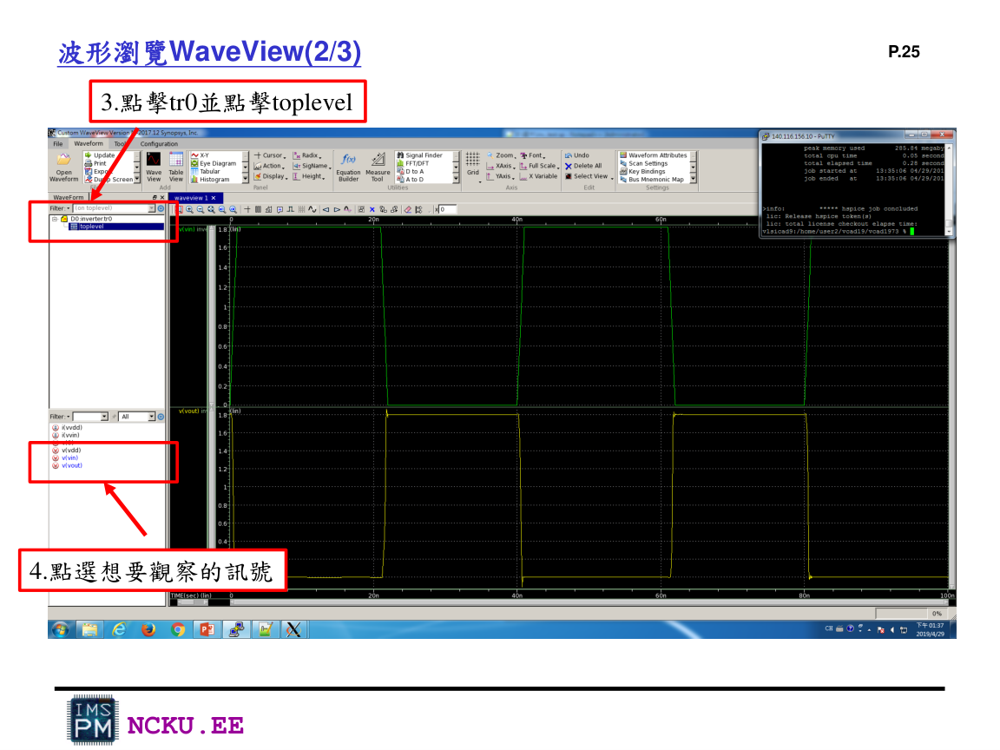
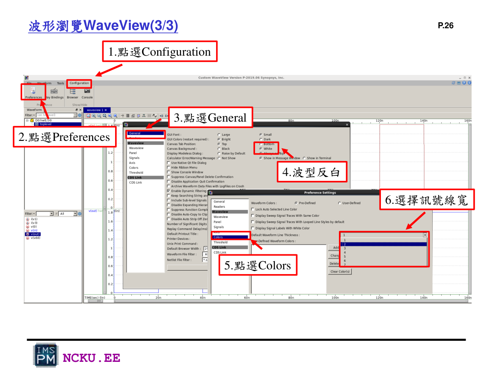

執行 HSPICE 與 WaveView 截圖
這一頁整理 terminal、job concluded、WaveView 開啟與訊號選取。
執行指令
hspice testbench.sp -o Lab8_result.lis成功時 terminal 要出現 job concluded。作業需要截取這個畫面。
WaveView 開啟流程

1. 點 Open Waveform，選擇 .tr0 檔。

2. 點 tr0 / toplevel，選擇要觀察的 signal。

3. 可以設定背景反白、線寬，讓截圖比較清楚。
應選取的訊號
inout_1ABout_2CDout_3
報告格式要求 inverter、NAND、NOR 分別截圖，不要只截一張全部擠在一起看不清楚的圖。
錯誤排除
| 現象 | 可能原因 | 處理方式 |
|---|---|---|
| job aborted | .sp 語法錯、model 路徑錯 | 打開 .lis 搜尋 error |
| 找不到 p_18/n_18 | 沒有 include cic018.l | 修正 .lib 路徑 |
| WaveView 無波形 | 沒有 .options post 或 .tr0 沒產生 | 確認 .options post 與 .tran |
| 輸出不符合真值表 | MOS 接腳順序或串並聯錯 | 檢查 Drain/Gate/Source/Body |